National Park Crowding Analysis
Overview
Clustering is an unsupervised exploratory data analysis technique used to identify groupings of similar data points and form them into "clusters". Unlike supervised learning, clustering does not have a target variable or labels. Groups are made based on similarities in data, grouping them together while differing from other groups.
There are two different methods of clustering, partitional and hierarchical clustering. Partitional clustering such as K-means, requires a predefined number of clusters prior to running the algorithm. Hierarchical clustering does not need a predefined schema of clusters and groups data based on similarity. Distance metrics determine similarity based on the distances between data points. Euclidean distance is calculated by measuring the straight line distance between points in a space. Non-Euclidean distance, such as cosine similarity measures the cosine of an angle between points in a multidimensional space.
For this project, clustering helps identify which national parks are similar in terms of visitation trends and park characteristics.
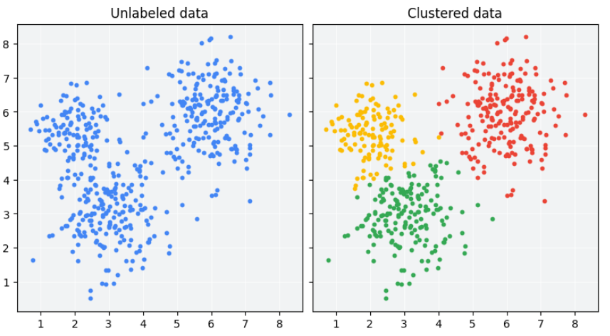
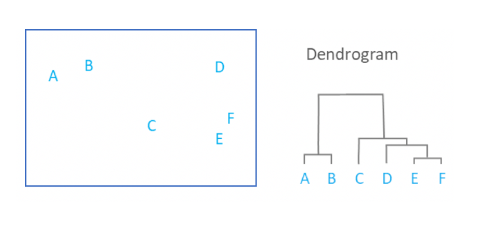
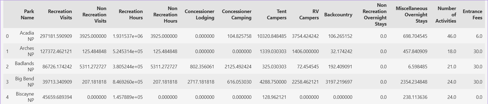
Data Preparation
K-Means clustering requires numeric and unlabeled data because it measures similarity between observations with mathematical distance calculations. Categorical variables such as park name, park code, and state were removed from the analysis and only numeric variables related to recreation, camping, lodging, activities, and entrance fees were used to form clusters.
The dataset was aggregated by park name, with the mean value calculated for each selected feature, resulting in one row per national park. Visitation data (Recreation Visits and Visitation Hours) was removed after initial k-means results showed clusters were driven primarily by differences in visitation volume, obscuring other meaningful groupings.
Results
To determine the optimal number of clusters (k), an elbow plot and silhouette scores were used.
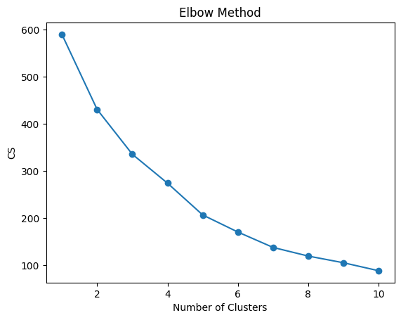
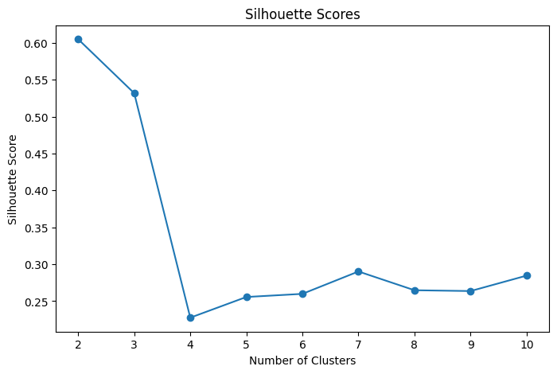
The elbow plot in Figure 2 shows that the optimal number of clusters is around 4-5 clusters because that is where the "bend" of the elbow is. The silhouette scores and plot in Figure 3 tell us otherwise, two clusters have the highest silhouette score of 0.605, meaning that the cluster structure is strong and well defined.
K = 2
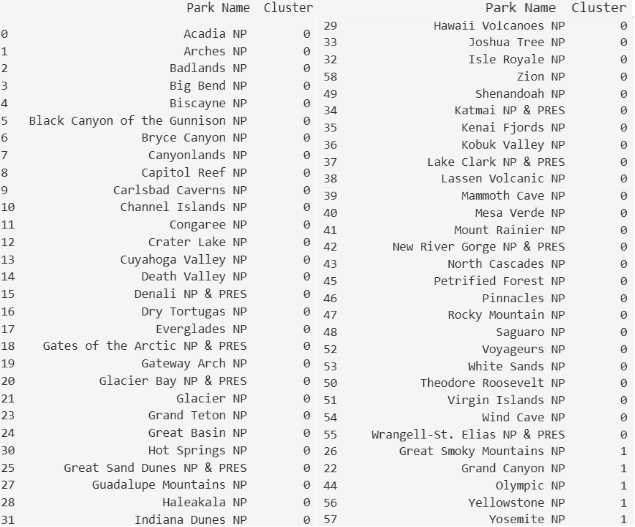
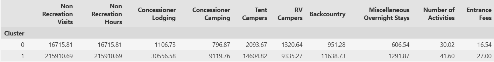
With k=2, the data divided into two broad groups: standard recreation parks and major destination parks. The primary differences between clusters were in lodging, camping, and backcountry use, indicating that overnight recreation opportunities were the key factor in cluster formation.
- Cluster 0 has a mean of 16,715.81 for Non Recreation Visits and Non Recreation Hours. Concessioner lodging has an average of 1,106.73 people. The average tent campers for this cluster are ~2,093. Average RV campers is ~1,320 people and the average amount of backcountry backpackers is ~951. The average amount of miscellaneous stays is ~606. The average number of activities is 30 and the average entrance fee is $16.54.
- Cluster 1 contains only five parks: Yosemite, Yellowstone, Olympic, Grand Canyon, and Great Smoky Mountains. For cluster 1, Non Recreation Visits and Non Recreation Hours have a mean of ~215,910. Concessioner lodging has an average of ~30,556 stays. The average tent campers for this cluster are ~14,604. Average RV campers is ~9,335 people and the average amount of backcountry backpackers is ~11,638. The average amount of miscellaneous stays is ~1,291. The average number of activities is 41 and the average entrance fee is $27.
K = 3
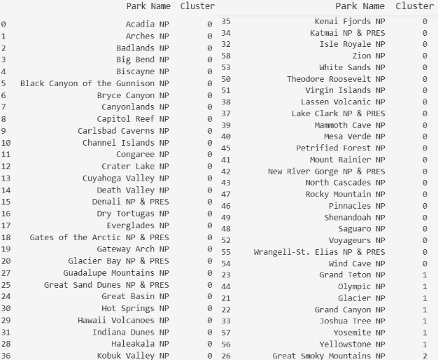
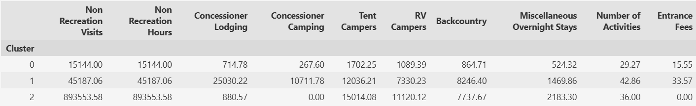
The k=3 solution revealed three distinct groups. Recreation infrastructure, overnight accommodations, camping activity, and visitor demand were the primary factors driving separation between parks.
- Cluster 0 has a mean of 15,144 for Non Recreation Visits and Non Recreation Hours. Concessioner lodging has an average of ~714 people. The average tent campers for this cluster are ~1,702. Average RV campers is ~1,089 people and the average amount of backcountry backpackers is ~864. The average amount of miscellaneous stays is ~524. The average number of activities is 29 and the average entrance fee is $15.55.
- Cluster 1 contains six parks: Grand Teton, Yosemite, Yellowstone, Olympic, Grand Canyon, and Joshua Tree. For cluster 1, Non Recreation Visits and Non Recreation Hours have a mean of ~45,187. Concessioner lodging has an average of ~25,030 stays. The average tent campers for this cluster are ~10,711. Average RV campers is ~7,330 people and the average amount of backcountry backpackers is ~8,246. The average amount of miscellaneous stays is ~1,469. The average number of activities is 42 and the average entrance fee is $33.57.
- Cluster 2 contains only one national park: Great Smoky Mountains. The average number of Non Recreation Visits is 893,553 and concessioner lodging averages 880. Concessioner camping has a mean of 0. There are around 15,014 tent campers and 11,120 RV campers on average. Backcountry campers average 7,737, which is less than cluster 1. Miscellaneous overnight stays were ~2,183. Finally, Great Smoky Mountains has 36 activities and zero entrance fee.
K = 4
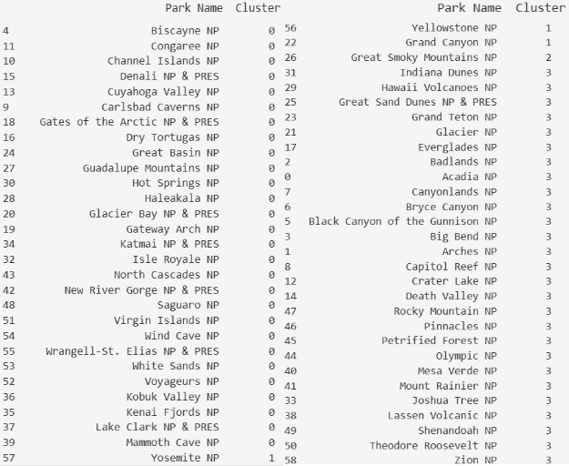
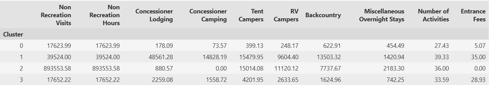
The k=4 solution revealed four distinct groups. The largest differences between clusters were in lodging, camping activity, backcountry use, and entrance fees, suggesting that recreation infrastructure and overnight opportunities were the major drivers of cluster formation.
- Cluster 0 had a mean of 17,623.99 for Non Recreation Visits and Non Recreation Hours. Concessioner lodging averaged approximately 178 stays, while concessioner camping averaged 74 stays. Tent campers averaged 399 visitors, RV campers averaged 248 visitors, and backcountry use averaged 623 visitors. Parks in this cluster also had the lowest average entrance fee at $5.07 and offered an average of 27 activities. These results suggest that Cluster 0 represents lower-use parks with limited recreation infrastructure and overnight visitation.
- Cluster 1 contained Yosemite, Yellowstone, and Grand Canyon. This cluster had a mean of 39,524 for Non Recreation Visits and Non Recreation Hours. Concessioner lodging averaged 48,561 stays, concessioner camping averaged 14,828 stays, tent campers averaged 15,480 visitors, and RV campers averaged 9,604 visitors. Backcountry use averaged 13,503 visitors, the highest among all clusters. Parks in this cluster offered an average of 39 activities and had the highest average entrance fee at $35. These results indicate that Cluster 1 contains the premier destination parks with extensive recreation opportunities and visitor infrastructure.
- Cluster 2 consisted solely of Great Smoky Mountains National Park. This cluster had exceptionally high Non Recreation Visits and Non Recreation Hours, averaging 893,554. Tent campers averaged 15,014 visitors, RV campers averaged 11,120 visitors, and miscellaneous overnight stays averaged 2,183. However, concessioner lodging averaged only 881 stays, concessioner camping averaged 0, and the entrance fee was $0. The unique combination of extremely high visitation and recreation activity caused Great Smoky Mountains to form its own cluster.
- Cluster 3 included parks such as Acadia, Arches, Glacier, Grand Teton, Olympic, Rocky Mountain, and Zion. This cluster had a mean of 17,652 for Non Recreation Visits and Non Recreation Hours. Concessioner lodging averaged 2,259 stays, concessioner camping averaged 1,559 stays, tent campers averaged 4,202 visitors, and RV campers averaged 2,634 visitors. Backcountry use averaged 1,625 visitors, parks offered an average of 34 activities, and entrance fees averaged $28.93. These values indicate that Cluster 3 represents popular recreation-oriented parks that experience higher camping and recreation activity than Cluster 0 but are smaller in scale than the destination parks in Cluster 1.
Hierarchical Clustering
Dendrogram
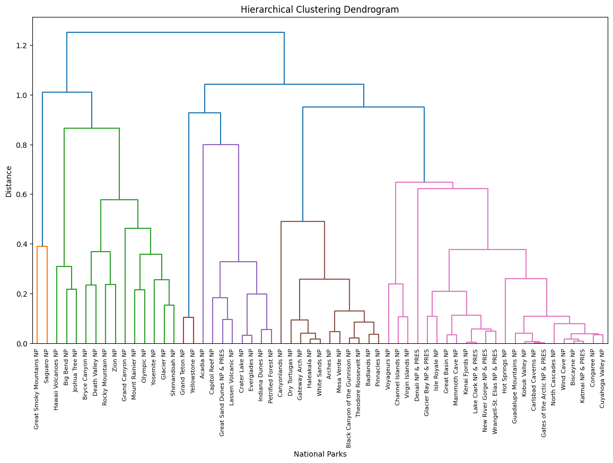
The hierarchical clustering dendrogram shows how parks are grouped based on cosine similarity. Parks that merge at lower distances are more similar, parks that merge at higher distances are less similar.
Yellowstone and Yosemite joined at a very low distance, indicating they share many recreation and visitor characteristics. Grand Canyon also joined this group early, suggesting similar patterns of camping, lodging, and recreation activity. Great Smoky Mountains remained separate from most parks until a much higher distance, reflecting its unique profile which is consistent with the K-Means results since it formed its own cluster in both the k=3 and k=4 solutions.
The major branch separations in the dendrogram suggest 3–4 clusters is appropriate, which aligns with the k=3 and k=4 K-Means solutions.
Conclusions
Clustering successfully identified meaningful groups of national parks based on recreation, camping, lodging, and visitation characteristics. The k=2 solution separated standard recreation parks from major destination parks, while k=3 and k=4 revealed additional structure within the data.
Great Smoky Mountains National Park consistently formed its own cluster due to its unique visitation and recreation profile. Hierarchical clustering produced similar results and confirmed that 3–4 clusters were appropriate for this dataset. Overall, lodging, camping activity, backcountry use, and recreation opportunities were the strongest factors influencing how parks were grouped.